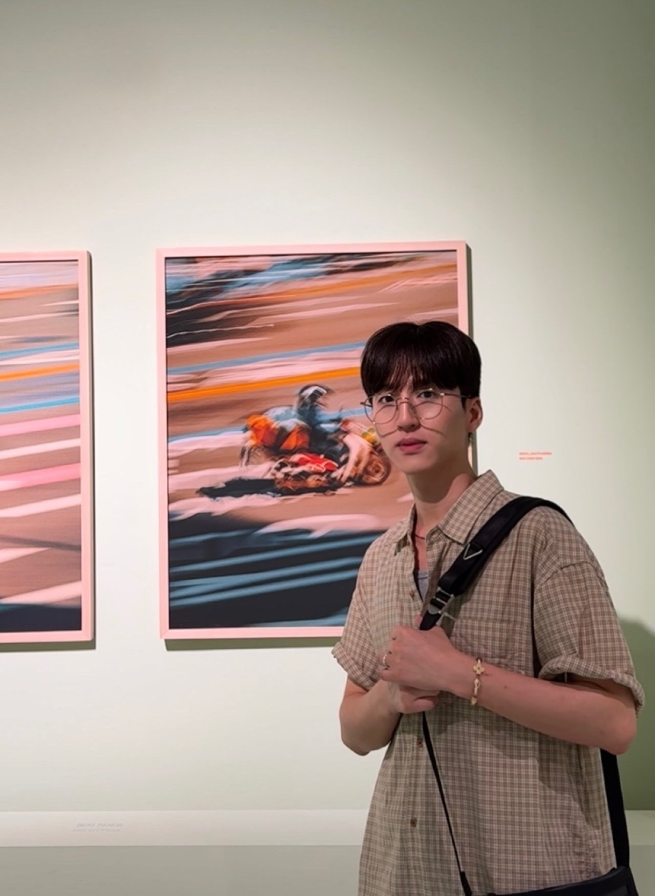
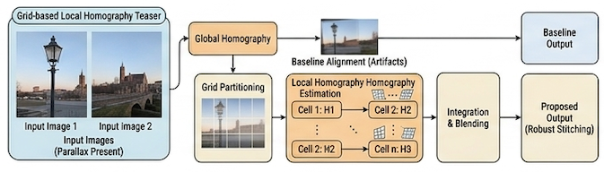

|
Taebok Lee I am an undergraduate student at Kookmin University, South Korea, and a research intern at the 3D Vision & Robotics Lab at UNIST, advised by Kyungdon Joo. My research focuses on 3D vision and robot perception, particularly in 3D reconstruction, robotic perception, and Vision-Language-Action (VLA) models for embodied systems. |
 |
News2026JUL
Received the Undergraduate Paper Award at ICROS 2026.
JUN
Our paper received the Best Talk Award at the ICRA 2026 Workshop.
MAY
Our paper was accepted to ICROS 2026.
APR
Our paper was selected for a Spotlight Presentation at the ICRA 2026 Workshop.
FEB
Our paper was accepted to Korea Artificial Intelligence Conference 2026.
2025DEC
Joined the 3D Vision & Robotics Lab at UNIST as a research intern.
SEP
Received the Outstanding Paper Award at the Korea Artificial Intelligence Conference 2025.
AUG
Our paper was accepted to Korea Artificial Intelligence Conference 2025.
|
Research* indicates equal contribution, † indicates corresponding author My research interests lie broadly in computer vision, 3D vision, and robotics. I have worked on diffusion-based data augmentation, robot perception, and locomotion, exploring problems across both visual understanding and robotic systems. I am currently interested in Vision-Language-Action (VLA) models and how visual perception and multimodal understanding can be connected to robotic intelligence. I enjoy exploring different research areas, trying new problems, and discovering new connections across fields. |
International Publications |
|||
|
|||
Domestic Publications |
|||
|
|||
|
 |
Grid-based Local Homography Model for Panorama Stitching under Parallax
Donghyeon Soon, Minseok Oh, Taebok Lee Korea Artificial Intelligence Conference, 2026 [paper] This work analyzes the limitations of global homography under parallax and introduces a grid-based local homography model for robust panorama stitching. |
||
|
|||

Awards
|
Education
|
Experience
|


Miscellaneous |
|
A fun moment during our robotics experiments! |
|
Template from this website. |